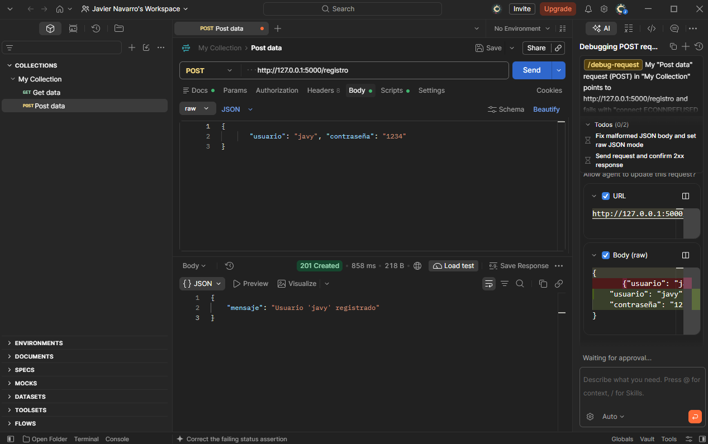
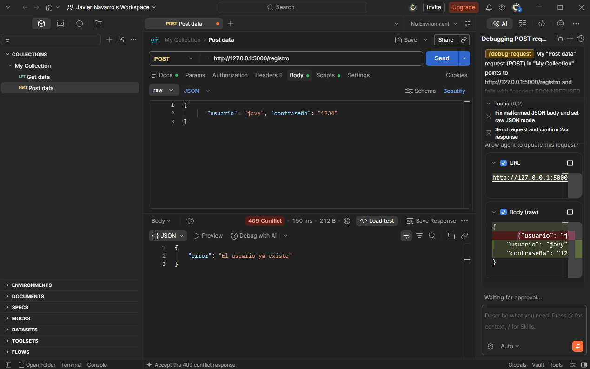
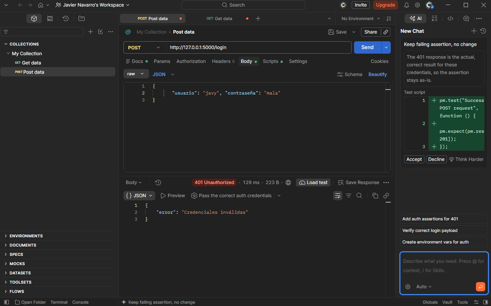
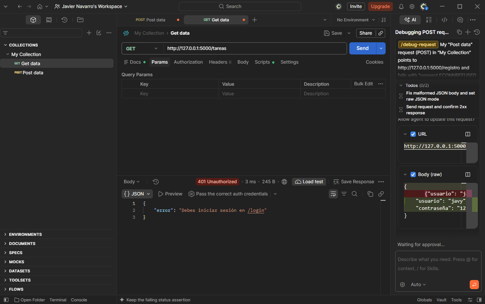
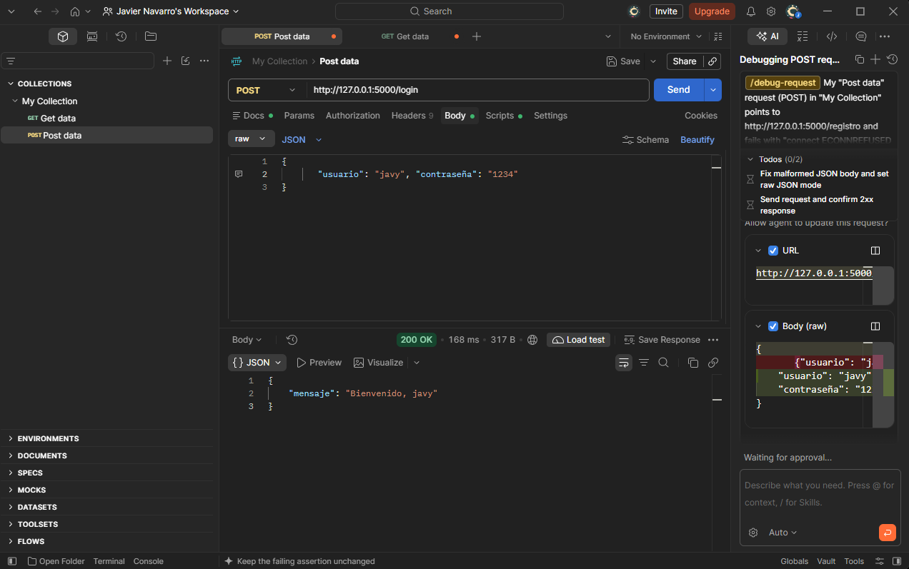
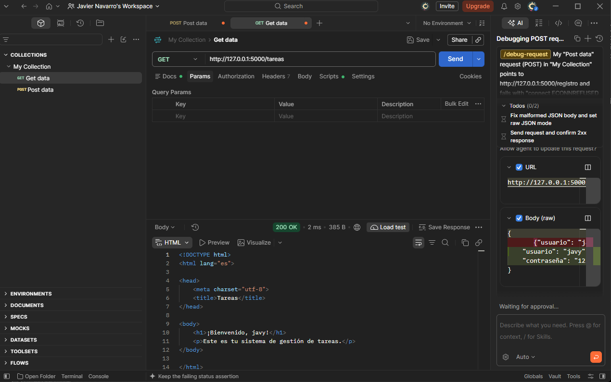
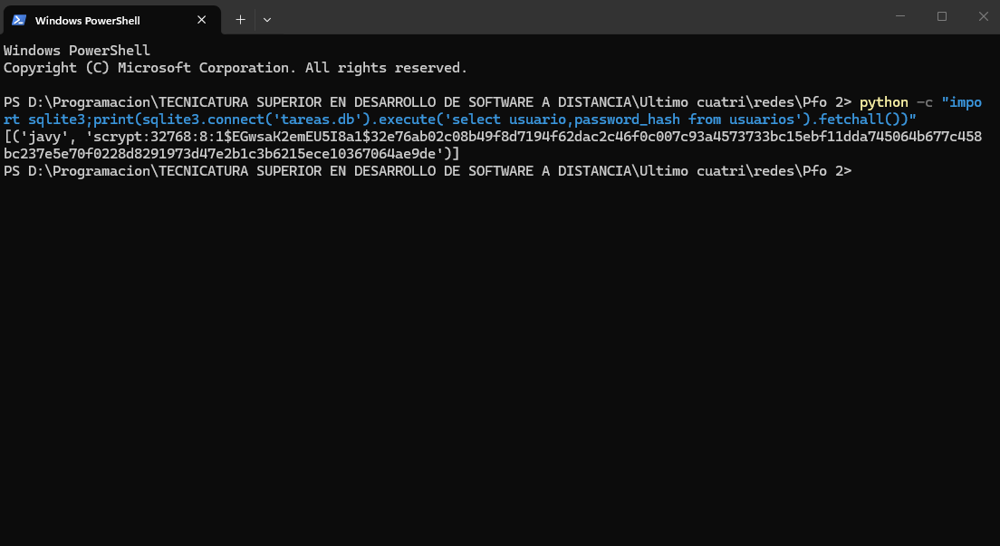

API REST en Flask con registro, login y página de bienvenida protegida. Los usuarios se guardan en SQLite con contraseñas hasheadas (Werkzeug, scrypt).
Código y documentación completa en el repositorio: ver servidor.py, cliente.py y README.md.
POST /registro: 201 / 400 / 409POST /login: 200 / 401GET /tareas: HTML de bienvenida (200) o 401 sin sesión






Si la base se filtra, las claves en texto plano quedan expuestas y se pueden probar en otros sitios. El hash es de un solo sentido: para validar se hashea lo que ingresa el usuario y se compara. El salt evita tablas precalculadas y un algoritmo lento (scrypt, bcrypt) encarece la fuerza bruta.
UNIQUE y NOT NULL.